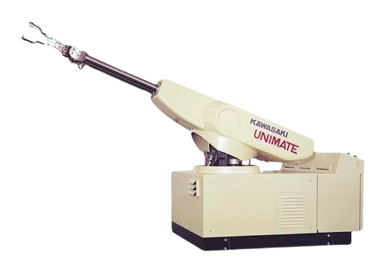

Robô Polar

O robô polar, também conhecido como robô esférico, é um manipulador industrial cuja área de trabalho possui formato semelhante a uma esfera. Seus movimentos combinam rotações e deslocamentos lineares, permitindo alcançar diferentes posições com grande flexibilidade. Foi um dos primeiros modelos de robôs utilizados na indústria e ainda é empregado em aplicações específicas.
Princípio de Funcionamento
O robô polar funciona através da rotação da base, da movimentação angular do braço e do deslocamento linear do efetuador final. Essa combinação permite que o robô alcance uma ampla área de trabalho com precisão, sendo controlado por servomotores e sistemas eletrônicos.
Características Técnicas
- Área de trabalho em formato esférico.
- Movimentos rotacionais e lineares.
- Grande alcance operacional.
- Boa precisão e repetibilidade.
- Estrutura robusta.
- Capacidade para diferentes tipos de ferramentas.
Aplicações Industriais
- Soldagem.
- Pintura industrial.
- Manipulação de materiais.
- Montagem de componentes.
- Fundição.
- Movimentação de cargas.
Integração com Automação e IoT
Os robôs polares podem ser integrados a CLPs, sensores inteligentes, sistemas supervisórios e plataformas de Internet das Coisas (IoT). Essa integração permite monitoramento remoto, coleta de dados, manutenção preditiva e otimização dos processos industriais.
Modelos Comerciais
| Fabricante | Modelo |
|---|---|
| ABB | IRB 760 |
| FANUC | R-2000iC |
| KUKA | KR QUANTEC |
Imagens de Modelos Comerciais

IRB 760
ABB

R-2000iC
FANUC

KR QUANTEC
KUKA